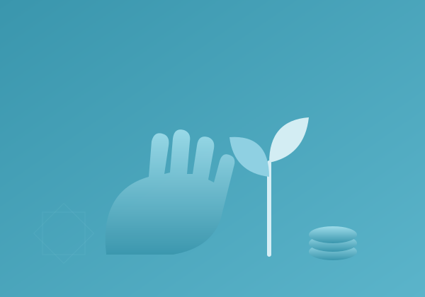

Wir unterstützen Menschen dabei, eigene Einkommensquellen aufzubauen. Durch Ausbildung, Werkzeuge und Startkapital entstehen kleine Unternehmen, die Familien dauerhaft unabhängig machen.

Ein Lebensmittelpaket ernährt eine Familie für einen Tag. Eine Nähmaschine, ein Werkzeugset oder ein Lastenrad ernährt sie für Jahre. Wir prüfen nicht nur die Bedürftigkeit, sondern auch die Fähigkeiten.
Wenn jemand gelernter Handwerker, Näherin oder Fahrer ist, finanzieren wir Werkzeuge, Maschinen oder Fahrzeuge — übergeben in sein Eigentum, damit er Einkommen erzielt und dauerhaft unabhängig wird.
Wir prüfen die Lebenssituation genau — und die Fähigkeiten, die ein Mensch bereits mitbringt.
Maschinen, Werkzeuge oder ein Fahrzeug werden ins Eigentum übergeben — mit Ausbildung, wo nötig.
Der Mensch arbeitet, erzielt Einkommen und versorgt seine Familie — und befreit sich aus der Abhängigkeit.
So wird Hilfe zu dem, was sie sein soll: Befreiung statt Abhängigkeit. Eine Werkstatt kann eine ganze Familie tragen — und manchmal eine ganze Nachbarschaft.
❤ Existenz ermöglichen